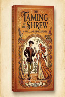

The Taming of the Shrew: Premium Illustrated Edition
A Timeless Comedy by William Shakespeare (Featuring Original Renaissance Portraits)

The Taming of the Shrew: Premium Illustrated Edition
A Timeless Comedy by William Shakespeare (Featuring Original Renaissance Portraits)
A Timeless Classic, Reimagined for the Modern Reader Experience William Shakespeare's legendary comedy, "The Taming of the Shrew", like never before. This exclusive Premium Illustrated Edition breathes new life into the classic tale of Petruchio and Katherina. [ Exclusive Features of this Edition ] Original Renaissance Oil Portraits: Features stunning, AI-crafted character illustrations (including Katherina, Petruchio, Bianca, and more) designed specifically for this edition. Modern & Clean Typography: Completely re-typeset with a refreshing, easy-on-the-eyes layout, generous line-spacing, and eye-care color palettes. Flawless E-Reader Experience: Expertly formatted to ensure perfect display on phones, tablets, and e-ink devices without broken formatting or lost verses. Whether you are a lifelong Shakespeare enthusiast, a student discovering the play for the first time, or a collector of beautifully designed digital books, this edition guarantees a premium reading journey.